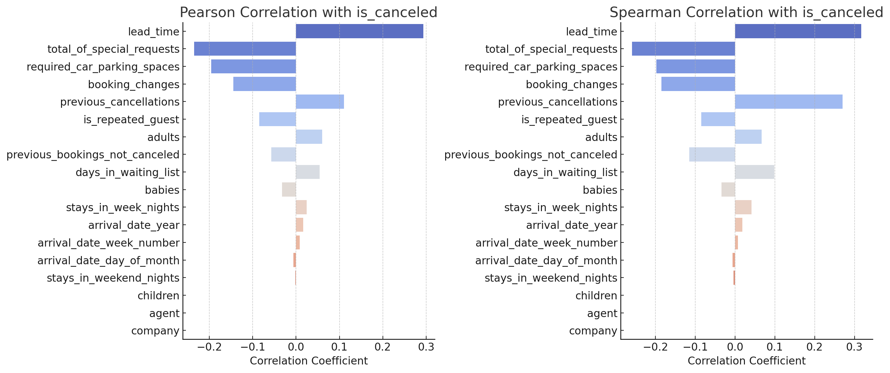

주요 예측 변수 분석
취소율과 가장 강한 상관관계를 가진 핵심 변수들의 상세 분석
상관관계 분석 결과
피어슨 vs 스피어만 상관계수

피어슨: 선형 관계
스피어만: 순위 관계
통계적 유의성 히트맵
p < 0.05 유의수준에서의 상관관계
상위 5개 핵심 변수
리드타임
+0.32
가장 강한 양의 상관
과거 취소
+0.27
높은 예측력
특수 요청
-0.26
가장 강한 음의 상관
주차 요구
-0.20
의지 표현 지표
대기 일수
+0.10
보조 예측 변수
주요 예측 변수
리드타임
예약 ~ 체크인 기간
상관계수: +0.32
예약을 일찍 할수록 취소 확률 증가.
과거 취소 이력
이전 취소 경험
상관계수: +0.27
취소 경험 고객은 재취소 가능성↑. 고객의 예약 패턴이 중요한 예측 요소
특수 요청
식사, 방 타입 등
상관계수: -0.26
요청 많을수록 취소율 감소(방문 의지).
보조 예측 변수
주차 공간 요구
상관계수: -0.20
주차 요구 시 취소율 감소
대기 일수
상관계수: +0.10
대기 기간이 길수록 취소 증가
핵심 인사이트
리드타임과 과거 취소 이력이 가장 강력한 취소 예측 변수 반면 특수 요청과 주차 요구는 고객의 강한 의지를 나타내어 취소율을 낮춤.